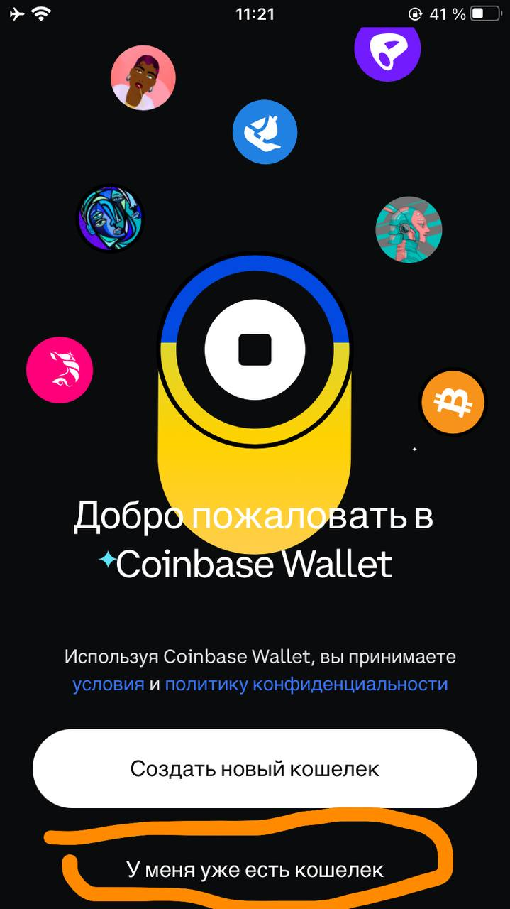

- Откройте приложение Coinbase Wallet на своем устройстве.
- На главной странице выберите "Восстановить кошелек".
 - Введите свою фразу восстановления (12 или 24 слова) в соответствующее поле.
- Следуйте инструкциям на экране, чтобы завершить процесс восстановления.

- После успешного ввода фразы восстановления ваш кошелек будет восстановлен, и вы сможете получить доступ к своим средствам.